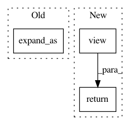

b2951813547426828d313a80c52de8a619e99731,gpytorch/lazy/constant_mul_lazy_tensor.py,ConstantMulLazyTensor,_quad_form_derivative,#ConstantMulLazyTensor#Any#Any#,90
Before Change
res[i] = res[i] * self._constant_as(res[i])
// Gradient with respect to the constant
if self.constant.numel() == 1:
constant_deriv = (left_vecs * self.base_lazy_tensor._matmul(right_vecs)).sum().expand_as(self.constant)
else:
constant_deriv = left_vecs * self.base_lazy_tensor._matmul(right_vecs)
constant_deriv = constant_deriv.sum(-2, keepdim=True).sum(-1, keepdim=True)
After Change
constant_deriv = constant_deriv.sum(-2).sum(-1)
// Get derivaties of everything else
constant = self.constant.view(*self.constant.shape, 1, 1)
left_vecs = left_vecs * constant
res = self.base_lazy_tensor._quad_form_derivative(left_vecs, right_vecs)
return res + (constant_deriv,)
def _size(self):
return self.base_lazy_tensor.size()
In pattern: SUPERPATTERN
Frequency: 3
Non-data size: 3
Instances
Project Name: cornellius-gp/gpytorch
Commit Name: b2951813547426828d313a80c52de8a619e99731
Time: 2018-11-26
Author: gpleiss@gmail.com
File Name: gpytorch/lazy/constant_mul_lazy_tensor.py
Class Name: ConstantMulLazyTensor
Method Name: _quad_form_derivative
Project Name: cornellius-gp/gpytorch
Commit Name: 1972461c3c06d11872cdf62941a616ee82c858a8
Time: 2018-08-17
Author: gpleiss@gmail.com
File Name: gpytorch/lazy/constant_mul_lazy_variable.py
Class Name: ConstantMulLazyVariable
Method Name: _constant_as
Project Name: OpenNMT/OpenNMT-py
Commit Name: b5486aaea994960688152e91fbab7699dc04e8c1
Time: 2017-08-14
Author: taolei@csail.mit.edu
File Name: onmt/modules/GlobalAttention.py
Class Name: GlobalAttention
Method Name: score